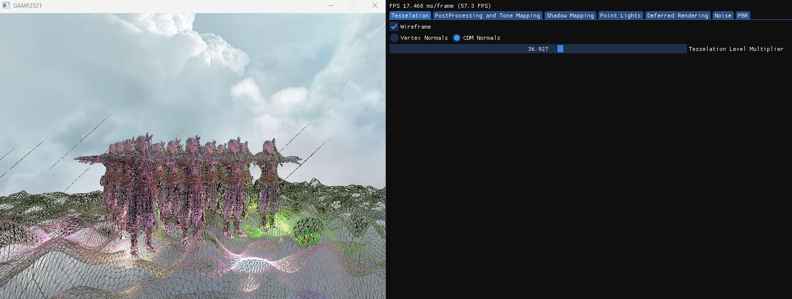

Introduction
"Advanced Shader Programming" was a module I took during the third year of my undergraduate degree.
The main focus of this module was to learn about shader programming using GLSL (OpenGL Shading Language)
,how to create various visual effects in real-time graphics applications and how to optimise the rendering pipeline and scene.
Project Structure and Implemented features
Using C++ and OpenGL, my tutors provided a basic framework to start from. From there, I implemented various features including:
Deferred Rendering & Lighting:
- Implemented a deferred shading workflow using a G-buffer (position, normal, albedo, depth)
- Authored a Physically Based Rendering (PBR) lighting model (Metallic–roughness workflow, Fresnel-Schlick reflectance approximation)
- Implemented directional lighting with shadow mapping
- Added multiple dynamic point lights (Runtime-adjustable color, position, and attenuation)
- Integrated skybox lighting into the lighting pass


Shadow Mapping:
- Implemented directional shadow mapping (Orthographic light-space projection and configurable shadow bias)
- Authored a shadow depth pre-pass
- Implemented shadow map debugging and visualization
- Enabled live shadow updates when light direction changes

GPU Compute Shader Features:
- Wrote compute shaders for procedural noise generation(Frequency, amplitude, lacunarity, persistence, octave control)
- Implemented heightmap-to-normal conversion using Central Difference Method (CDM)
- Implemented depth-based fog using compute shaders
- Managed image load/store bindings and GPU memory barriers

Tessellation & Geometry Shaders:
- Implemented GPU tessellated terrain(Tessellation Control & Evaluation shaders)
- Added runtime tessellation level control
- Implemented multiple normal calculation modes(Vertex normals, CDM normals)
- Used geometry shaders for: Terrain processingBillboard expansion
- Tessellation scales acccording to camera position (closer->more tess, furher->less tess)


Post-Processing Effects:
- Implemented multiple screen-space post-processing effects (Color inversion, Gaussian blur, Edge detection)
- Implemented HDR tone mapping operators (ACES, Uncharted, Reinhard)
- Implemented depth-aware fog compositing
- Enabled runtime post-processing switching


Procedural Content & Materials:
- Implemented procedural terrain generation (Compute-generated heightmaps, Texture blending (grass / rock))
- Integrated procedural noise textures directly into tessellated geometry
- Implemented normal mapping using both texture-based and compute-generated normals
Geometry, Models & Effects:
- Integrated normal-mapped character rendering
- Implemented billboard rendering using geometry shaders
- Populated scenes with procedurally placed instances
- Implemented multi-texture material setups

Real-Time Debugging & Tools
- Built an ImGui-based editor/debug UI (G-buffer visualization, Shadow map inspection, Noise texture previews, Defferred rendering view)
- Added real-time parameter tweaking for: Lighting, Shadows, Tessellation, Noise generation, PBR material properties, Post-processing effects
- Used RenderDoc for frame capture and shader debugging
Interaction & Runtime Control:
- Added wireframe rendering toggle
- Enabled live scene and lighting manipulation
Summary
Technical Skills Demonstrated
- Advanced GLSL shader programming (Vertex, Fragment, Geometry, Tessellation, Compute)
- Physically Based Rendering (PBR)
- Deferred shading techniques
- GPU compute workflows
- Procedural content generation
- Real-time graphics debugging tools
- Debugging with RenderDoc